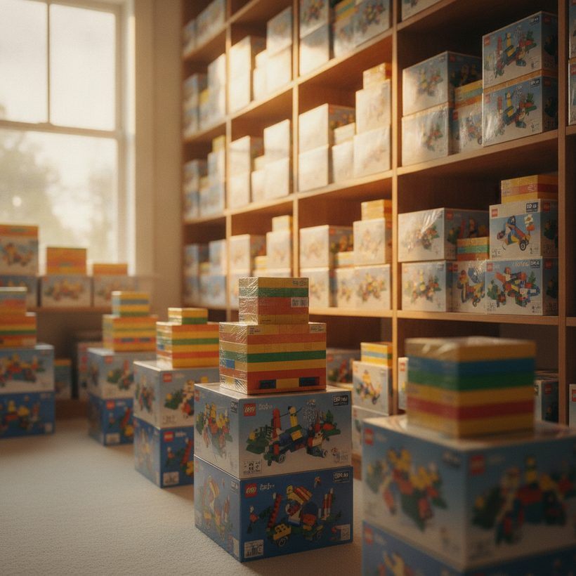
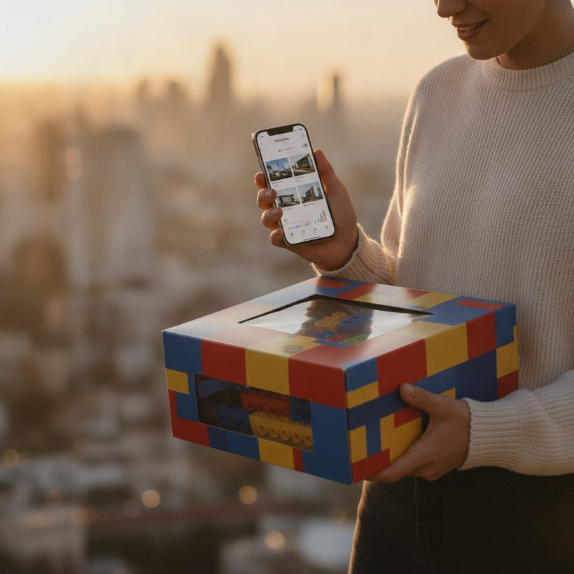

LEGO-beleggen voor beginners: is het de moeite waard in 2026?
Hoe LEGO-beleggen echt werkt, welke rendementen realistisch zijn versus de hype, de risico's die niemand noemt, en hoe je de waarde van een set volgt.
Ranglijst · 2026Om de paar maanden beweert een krantenkop dat teruggetrokken LEGO-sets goud en de aandelenmarkt verslaan. Het levert prima clickbait op, maar de werkelijkheid van LEGO-beleggen is genuanceerder. Sommige sets stijgen wel degelijk in waarde nadat ze de schappen verlaten; de meeste houden simpelweg hun waarde of verslaan de inflatie nauwelijks. Als je erin gaat met de verwachting van moeiteloze dubbelcijferige rendementen, raak je waarschijnlijk teleurgesteld en zit je met dozen in een kast.
Deze gids doorloopt hoe de praktijk echt werkt, welke rendementen realistisch zijn in 2026, de risico's die zelden de koppen halen, en hoe je een set onderzoekt en volgt voor en nadat je koopt. Het doel is je te helpen beslissen of het bij jouw situatie past, niet je een snel-rijk-schema aan te smeren.
Hoe LEGO-beleggen echt werkt
Het kernidee is eenvoudig. LEGO produceert een set voor een beperkte periode en trekt die daarna terug. Zodra het winkelaanbod opdroogt, wenden kopers die de set misliepen zich tot de secundaire markt. Als de vraag het aanbod overleeft, stijgt de prijs van de verzegelde set boven de oorspronkelijke adviesprijs (RRP). Beleggers kopen sets op of onder de adviesprijs, bewaren ze verzegeld en verkopen na terugtrekking, wanneer de waardestijging heeft plaatsgevonden.
Het sleutelwoord is verzegeld. Een nieuwe, ongeopende doos in gave staat levert een premie op die een geopende of beschadigde set zelden evenaart. Daarom is LEGO-beleggen eigenlijk een spel van inkopen, geduld en opslag in plaats van bouwen. Thema's met sterke volwassen fanbases, zoals gelicentieerde lijnen, modular buildings en grote displaysets, neigen de vraag het langst vast te houden, al zijn er geen garanties.
Weet je niet wat je set waard is? Vergelijk de beste tools gratis →Hoe je stap voor stap begint met LEGO-beleggen
Beginners verliezen het meeste geld door te improviseren, dus het helpt om een herhaalbaar proces te volgen in plaats van elke set na te jagen die deze week trending is op sociale media. Een verstandige startvolgorde ziet er zo uit:
- Stel een budget in dat je kunt wegzetten. Omdat dit illiquide is, leg alleen geld vast dat je jarenlang niet nodig hebt. Begin met een of twee sets, geen pallet.
- Bouw een shortlist. Richt je op thema's met bewezen volwassen vraag en sets die dicht bij terugtrekking zijn of exclusief voor één kanaal.
- Verifieer de vraag met data voordat je een cent uitgeeft, met echte verkoopprijsgeschiedenis in plaats van hoopvolle advertenties.
- Koop op of onder de adviesprijs, idealiter tijdens een actie, zodat de waardestijging niet eerst een slechte instapprijs hoeft te wissen.
- Bewaar verzegeld en log de aankoop met de datum, prijs en het setnummer zodat je later eerlijk je resultaten kunt meten.
Deze stappen een handvol keren doorlopen leert je meer dan welk artikel dan ook, want je begint te zien hoe specifieke sets zich in je eigen handen gedragen in plaats van in geaggregeerde gemiddelden.
Realistische rendementen en tijdlijnen versus de hype
Geaggregeerde studies citeren vaak gemiddelde jaarrendementen in de hoge enkele cijfers tot lage dubbele cijfers voor teruggetrokken sets. Die cijfers zijn echt maar misleidend wanneer ze op één afzonderlijke aankoop worden toegepast. Het zijn gemiddelden over duizenden sets, sterk scheefgetrokken door een handvol uitblinkers. De typische teruggetrokken set stijgt langzaam in waarde, en veel overtreffen nooit de adviesprijs zodra je kosten en tijd meerekent.
Tijdlijn doet er net zoveel toe als setkeuze. Betekenisvolle waardestijging begint doorgaans een jaar of twee na terugtrekking, zodra de overtollige winkelvoorraad is geruimd en het resterende verzegelde aanbod uitdunt. Sets die te vroeg worden doorverkocht, gaan vaak rond de adviesprijs weg, terwijl echte winst zich neigt op te bouwen over een meerjarige hold. Een eerlijker verwachting is dat een goed gekozen set die enkele jaren na terugtrekking wordt vastgehouden een bescheiden jaarrange kan opleveren, met een klein aantal dat dramatisch beter presteert en een lange staart die niets doet. Behandel LEGO als een illiquide, speculatief verzamelobject, niet als een betrouwbaar spaarmiddel. Als een set je ook plezier geeft om te bezitten, verlicht dat de druk op de financiële prestaties.
Bekijk de ranglijst →
De risico's die niemand in de koppen zet
Verschillende praktische risico's scheiden papieren winst van gerealiseerde winst. Opslag is de eerste: verzegelde dozen hebben een koele, droge, rookvrije ruimte uit de zon nodig, en ze nemen echt ruimte in. Gedeukte hoeken, zonverbleking en vochtschade tasten allemaal de waarde aan.
Conditie wordt nauwlettend beoordeeld door serieuze kopers, dus een doos die er voor jou prima uitziet, kan door hen streng beoordeeld worden. Liquiditeit is een andere beperking: verkopen kan weken of maanden duren, en je bepaalt zelden de timing. Ten slotte vreten kosten stilletjes aan het rendement, waaronder marktplaatscommissies, betalingsverwerking, verzending en verzekering. Een set die op papier 30 procent lijkt te zijn gestegen, kan na deze kosten veel minder opleveren. Reken ze mee voordat je koopt, niet erna.
Opslag en conditie die je waarde beschermen
Omdat conditie de prijs op de doorverkoopmarkt bepaalt, is opslag geen bijzaak; het is onderdeel van de belegging. Houd verzegelde dozen rechtop of plat op een manier die druk op de hoeken vermijdt, aangezien gedeukte randen een van de eerste dingen zijn die een serieuze koper opmerkt. Streef naar een stabiele omgeving: koele temperaturen, lage luchtvochtigheid, geen direct zonlicht, en geen sigaretten- of kookrook, die allemaal karton kunnen laten verbleken of geuren kunnen achterlaten die de waarde verlagen.
Hanteer dozen zo min mogelijk, en vermijd het stapelen van zware items op sets van dun karton. Sommige beleggers schuiven grotere dozen in doorzichtige beschermhoezen of zuurvrije covers, maar de grootste winst komt van een goede locatie in plaats van dure accessoires. Wanneer je uiteindelijk verkoopt, bouwen eerlijke, goed belichte foto's van een onbeschadigde doos kopersvertrouwen op en ondersteunen een sterkere prijs. Kortom, dezelfde discipline die een doos gaaf houdt, is wat je marge beschermt.
Bekijk de ranglijstOntdek wat je sets écht waard zijn — vergelijk de top 6, gratis.Bekijk de ranglijst →Waar je sets met korting koopt
Je instapprijs is een van de weinige variabelen die je volledig in de hand hebt, dus onder de adviesprijs kopen is een blijvend voordeel. Officiële seizoensuitverkopen, retaileracties en loyaliteits- of gift-with-purchase-aanbiedingen kunnen je kosten effectief verlagen zonder de conditie aan te raken. Aankopen bundelen om gratis verzending te ontgrendelen, verlaagt ook je werkelijke kosten per set.
- Geef voorrang aan legitieme retailers tijdens actieperiodes in plaats van uit ongeduld de volle prijs te betalen.
- Let op uitverkoop van sets die terugtrekking naderen, waar kortingen en krimpend aanbod kunnen overlappen.
- Wees voorzichtig met sterk afgeprijsde verzegelde sets van onbekende verkopers; namaak en opnieuw geplasticeerde dozen bestaan, dus koop van bronnen die je kunt vertrouwen.
- Volg eerst de echte marktwaarde van een set, zodat een "koopje" wordt afgemeten aan verkoopprijzen, niet aan een opgeblazen prijskaartje.
Een gedisciplineerde koper die consequent onder de adviesprijs instapt, heeft veel minder waardestijging nodig om winst te bereiken dan iemand die op hype de winkelprijs betaalt.
Hoe je sets kiest die het overwegen waard zijn
Er is geen formule, maar een paar principes verbeteren je kansen. Geef voorkeur aan sets met een duidelijk, blijvend publiek in plaats van rages. Populaire gelicentieerde thema's, gedetailleerde modular buildings en iconische displaymodellen neigen de vraag vast te houden. Exclusieven en sets gekoppeld aan een mijlpaal of geliefd onderwerp presteren vaak beter dan generieke assortimenten.
- Koop op of onder de adviesprijs, idealiter tijdens uitverkoop, zodat de waardestijging niet eerst een slechte instapprijs hoeft te overwinnen.
- Geef voorkeur aan sets dicht bij of voorbij terugtrekking, waar het aanbod al krapper wordt.
- Vermijd het overmatig inkopen van één set; brede hype betekent vaak dat iedereen anders ook heeft ingeslagen.
- Geef prioriteit aan conditie bij aankoop, aangezien een gave doos later makkelijker te verkopen is.
Spreiden over een paar thema's verkleint de kans dat één zwakke categorie je resultaten bepaalt.
Bekijk de ranglijst →
Hoe je waarde en ROI volgt
Gokwerk is waar de meeste beginners geld verliezen, dus leun op data in plaats van advertentieprijzen. Vraagprijzen vertellen je wat verkopers hopen te krijgen; echte verkoopprijzen vertellen je wat kopers daadwerkelijk betaalden. Daarvoor is onze topkeuze BrickGains, die zich richt op echte verkoopprijsgeschiedenis zodat je de werkelijke marktwaarde kunt beoordelen in plaats van optimistische advertenties.
Bronnen kruisverwijzen geeft een vollediger beeld. BrickLink is nuttig om het aanbod en de huidige advertenties over de bredere markt in te schatten, terwijl BrickEconomy prognoses en historische trends biedt. Voordat je koopt, vergelijk je de verkoopprijskoers van een set over meerdere tools en bevestig je dat het verhaal standhoudt. Na aankoop log je je instapprijs en check je periodiek de laatste gerealiseerde waarden om de ROI te berekenen na aftrek van verwachte kosten. Eerlijk bijhouden, inclusief je verliezers, is wat een hobby verandert in een gedisciplineerd beslisproces.
Weten wanneer en hoe je verkoopt
Winst telt pas zodra die gerealiseerd is, dus een exitplan doet er net zoveel toe als de aankoop. Er is zelden een perfecte piek om te pakken; kijk in plaats daarvan naar de verkoopprijstrend en overweeg te verkopen wanneer een set duidelijk in waarde is gestegen, wanneer de vraag sterk lijkt, of wanneer je simpelweg kapitaal wilt hergebruiken voor een betere kans. Verkopen in zichtbare vraag verslaat meestal het wachten op een mythische top.
Kies het kanaal dat bij je prioriteiten past: brede marktplaatsen bieden bereik maar rekenen kosten, terwijl liefhebbersplekken kopers kunnen aantrekken die conditie waarderen. Wat je ook kiest, verifieer huidige gerealiseerde prijzen voordat je te koop zet zodat je vraagprijs verankerd is aan de realiteit, en reken dan commissies, verzending en verzekering mee in het bedrag dat je daadwerkelijk in je zak steekt. Houd van elke verkoop gegevens bij, want een helder grootboek van winsten en verliezen is de enige manier om te weten of je strategie echt werkt.
Dus, is het de moeite waard in 2026?
LEGO-beleggen kan werken voor geduldige mensen die van de sets genieten, tegen goede prijzen kopen, ze zorgvuldig bewaren en rendementen als bonus behandelen in plaats van als plan. Het past slecht als je liquiditeit nodig hebt, opslaglogistiek verafschuwt of de buitensporige cijfers uit virale koppen verwacht. Begin klein, houd alles bij met verkoopprijsdata, en schaal pas op wanneer je eigen resultaten, niet die van iemand anders, het rechtvaardigen.
Dit artikel is uitsluitend voor educatieve doeleinden en is geen financieel advies. Verzamelobjecten zijn speculatief en kunnen aan waarde verliezen; doe je eigen onderzoek voordat je geld uitgeeft dat je je niet kunt veroorloven te verliezen.
Bekijk de ranglijst 2026 van de beste LEGO-waardetools
Ontdek wat je sets écht waard zijn — vergelijk de top 6, gratis.
Bekijk de ranglijstVeelgestelde vragen
Is LEGO-beleggen echt winstgevend?
Het kan, maar rendementen lopen sterk uiteen. Geaggregeerde studies tonen bescheiden gemiddelde waardestijging voor teruggetrokken sets, gedreven door een minderheid van sterke presteerders. Veel sets verslaan de adviesprijs nauwelijks na kosten, dus behandel het als speculatief in plaats van een betrouwbaar rendement.
Moeten LEGO-sets verzegeld zijn om in waarde te stijgen?
Voor beleggingsdoeleinden, ja. Verzegelde dozen in gave staat leveren de hoogste premies op. Geopende of beschadigde sets kunnen nog verkopen, maar meestal met een merkbare korting, dus conditie bij aankoop en zorgvuldige opslag doen er veel toe.
Hoe weet ik wat een LEGO-set echt waard is?
Gebruik echte verkoopprijzen, niet vraagprijzen. Tools zoals BrickGains richten zich op echte verkoopprijsgeschiedenis, en het kruisverwijzen van BrickLink en BrickEconomy helpt aanbod- en trenddata te bevestigen voordat je koopt of verkoopt.
Wat zijn de grootste risico's bij LEGO-beleggen?
Opslag- en conditieschade, slechte liquiditeit (sets kunnen maanden duren om te verkopen), en kosten zoals commissies, verzending en verzekering. Samen kunnen deze een schijnbare papieren winst veranderen in een veel kleiner of negatief reëel rendement.
Hoe lang moet ik een LEGO-set vasthouden voordat ik verkoop?
Betekenisvolle waardestijging begint doorgaans een jaar of twee na terugtrekking, zodra de overtollige winkelvoorraad is geruimd. Veel beleggers houden sets enkele jaren na terugtrekking en verkopen in zichtbare vraag in plaats van een exacte piek te timen, altijd na eerst verkoopprijsdata te checken.